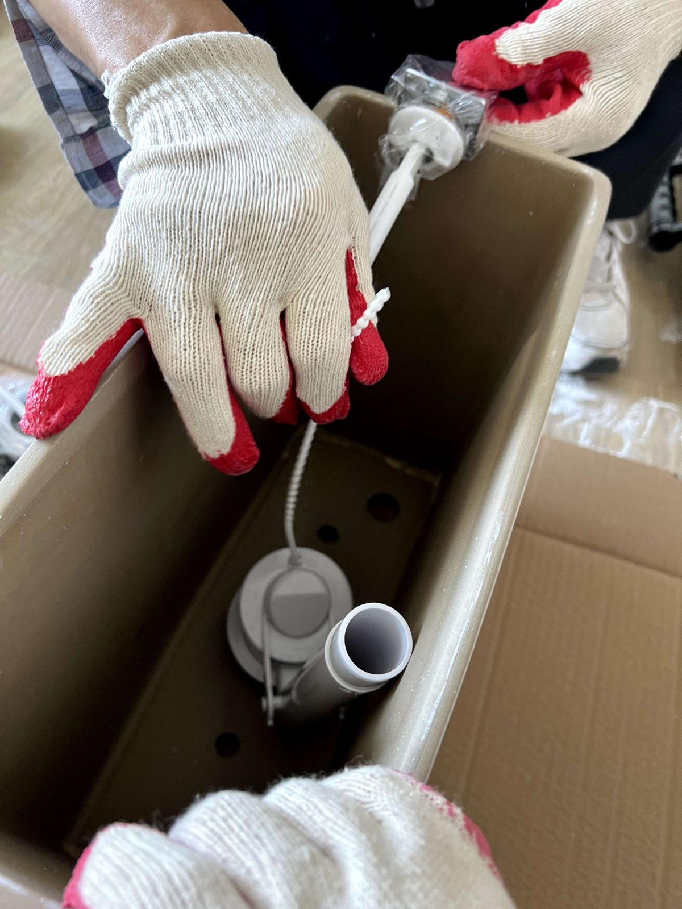

대전 대자연아파트 욕실 수전 홀 타공·위생기구 설치 — 작은 부속까지 맞추는 마감

작업 핵심
현장 작업 한눈에 보기
- 현장
- 대전 대자연아파트 욕실
- 문제
- 수전 홀 타공·기구 설치
- 작업
- 타공·위생기구 설치
물탱크 내부 부속 조립 - 결과
- 공개 사진은 내부 부속 조립
전체 설치·작동 확인 사진 없음
대전 대자연아파트 욕실에서 수전 홀을 타공하고 위생기구를 설치했습니다. 물탱크 내부 부속을 조립하는 실제 사진과 함께 마감 단계의 작업을 소개합니다.
타일 다음에는 기구를 맞추는 작업이 남습니다
안녕하세요. 만물인테리어입니다. 대자연아파트 욕실에서 수전 홀 타공과 위생기구 설치를 진행했습니다.
벽과 바닥 마감이 끝나 보여도 수전과 위생기구가 제자리에 연결되어야 사용할 준비가 갖춰집니다.
배관 위치에 맞춰 수전 홀을 타공했습니다
수전이 나올 위치에 맞춰 타일에 홀을 타공했습니다. 배관 자리와 기구가 설치될 위치를 함께 맞추는 작업입니다.
타공 장면의 공개 사진은 없어, 이 부분은 공정 설명으로만 남깁니다.
사진 속 작업은 물탱크 내부 부속 조립입니다
실제 사진에는 변기 물탱크 안의 부속을 조립하는 모습이 담겨 있습니다. 외부에서는 보이지 않는 내부 부품과 연결 위치를 가까이 볼 수 있습니다.
위생기구는 겉모양뿐 아니라 안쪽 부속을 맞추는 단계도 설치 과정에 포함됩니다.

사용 중에는 물이 남는 위치를 살펴보세요
기구 주변에 물이 반복해서 맺히거나 물탱크에서 물 흐르는 소리가 계속되면 상태를 확인해 보시는 것이 좋습니다.
부속을 억지로 조이기보다, 물이 보이는 위치와 증상을 알려 주시면 점검할 부분을 좁히는 데 도움이 됩니다.